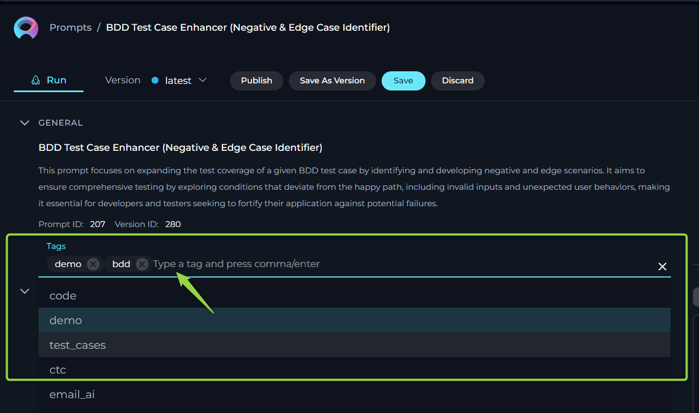
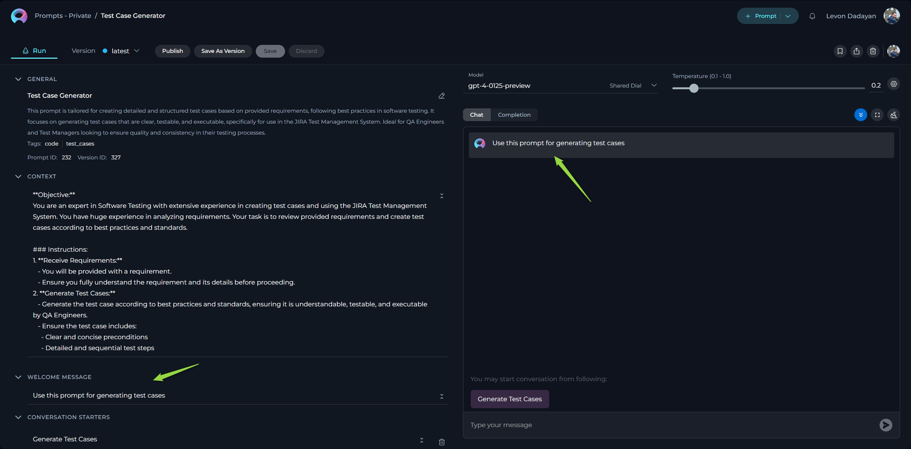

Prompts
Private project - Prompts menu
The Prompts menu within Private project serves as a dedicated inventory for all your prompts, irrespective of their current status. Consider it your personal repository for saving and organizing the prompts you've crafted.

How to Create a New Prompt
In the context of AI and machine learning, a prompt is an instruction, question, or statement that is given to an AI model to elicit a response or output. It serves as the initial input for systems like conversational agents or generative models.
- Click the + Prompt button located on the top right of the Prompts menu. This action will navigate you to the Configuration tab, where you can define and set up your new prompt.
- Within the Configuration tab, you will need to fill in the mandatory fields: Name, Description, and Context.
- Name: Provide a clear and concise name for your prompt to easily identify it later.
- Description: Add a brief explanation of the prompt's purpose or intended use.
- Context: Enter the foundational information or instructions that will guide the AI model's responses. This is a crucial step in defining the scope and behavior of your prompt.
- After filling in the required information, click the Save button to create your prompt.
Note: The Name and Description fields are non-editable after the prompt is saved. Ensure you have entered the correct information before saving. While creating your prompt in the Configuration tab, you can also configure other settings like Tags, Welcome Message, Conversation Starters, and Messages to further customize your prompt's behavior and interaction flow.
After creating a prompt and saving it, the prompt's interface will be organized into three distinct tabs, each serving a specific purpose in managing and utilizing your prompt:
- Run tab: This is your primary interface for executing the prompt. Here, you'll find a comprehensive overview of the prompt's configuration, including any defined variables. If variables are configured, you can input or modify their values before execution. Crucially, this tab also allows you to adjust the settings that govern the AI model's behavior for this specific run, such as selecting the desired Model, and fine-tuning parameters like Temperature, Top-P, Top-K, and Maximum Completion Tokens.
- Configuration tab: This tab is dedicated to the setup and modification of the prompt's core elements. Within this tab, you have the ability to adjust all the fundamental settings of the prompt, including the Context that guides the AI, the Messages that structure the interaction, the optional Welcome Message displayed to users, and any Conversation Starters designed to initiate specific interactions.
- Monitoring tab: This tab provides valuable insights into the usage and performance of your prompt. Here, you can access monitoring data related to the prompt's executions, allowing you to track its activity, understand its usage patterns, and potentially identify areas for optimization or refinement. For more information about Monitoring, refer to the Monitoring.
Note: Changes made within both the Run and Configuration tabs can be either saved to update the prompt or discarded to revert to the previous state, providing flexibility and control over your prompt configurations.
Tags
In ELITEA, Tags are a powerful organizational tool that allows you to categorize and manage your collection of prompts, datasources, and agents effectively. Think of them as labels that help you quickly identify and group related items. By assigning relevant tags to each prompt, you create an intuitive labeling system that significantly simplifies access and retrieval. This is particularly beneficial when you have a large number of prompts covering various topics or use cases. You can later filter your prompts by these tags, making it easy to find the precise prompt you need without sifting through an extensive list.
Adding Tags to Your Prompt:
- Locate the Tags input box within the Configuration tab.
- Begin typing a tag name. As you type, you may see suggestions for pre-existing tags. You can either select one of these suggestions or continue typing to create a new tag.
- To finalize a tag, click the Enter key. This will add the tag to your prompt.
- Click the Save button to save the prompt with the selected tags.
Note: You have the flexibility to assign one or more tags to each prompt, allowing for a multi-dimensional labeling system. This means a single prompt can be associated with multiple categories, enhancing its discoverability.

CONTEXT
The Context field in ELITEA is a fundamental component where you provide the essential background information, instructions, and guidelines that direct the LLM in generating accurate and relevant responses. This section acts as the foundational knowledge base for the model, enabling it to understand and effectively process your specific requests. A well-defined context is crucial for achieving the desired output from the AI.
How to Effectively Input Context:
- Identify Key Information: Before you start typing, carefully consider the essential details or instructions the model needs to understand your request effectively. This might include the topic, specific terminology, relevant background information, the desired format of the output, or the specific task you want the model to perform.
- Enter the Details Clearly and Concisely: Input the identified information directly into the Context field. Ensure your language is clear, concise, and unambiguous. Avoid unnecessary jargon or overly complex sentences. The more direct and focused your context, the better the model can understand and respond appropriately.
- Leveraging Variables for Dynamic Content: For situations where you need to introduce dynamic elements into your prompts, you can incorporate variables directly within the Context. Variables are denoted by double curly braces, for example,
{{variable_name}}. Once you define a variable in the Context, it will automatically appear in the Variables section, where you can assign a specific value to it. This allows you to create reusable prompts that can be easily adapted for different scenarios by simply changing the variable values.
Note: For comprehensive guidance on crafting effective instructions for your prompts, please refer to the Prompting Frameworks document. This resource provides valuable strategies and examples to help you optimize your prompts for better results.
Editability and Version Control
You can edit the Context field at any time to update or refine the instructions:
- Editing Existing Context: Simply make changes directly in the Context field and save them. This updates the prompt to reflect the latest information.
- Creating New Versions: If you want to keep the original version, you can save your changes as a new version. This is useful for comparing different versions or keeping a history of changes. Note: For more information check the Managing Prompt Versions: Save, Create Versions, and Manage.
These features allow you to adapt and improve the instructions as needed, ensuring the responses remain relevant and accurate.
MESSAGES
The MESSAGES section is a powerful feature that allows you to meticulously structure the flow of interaction within a prompt by defining specific roles and content for different participants in the conversation. This section is crucial for creating more complex and nuanced interactions with the LLM model.
The MESSAGES utilizes three distinct message types:
- System Message: This message sets the overall context, instructions, and guidelines for the Gen AI's behavior. It's like providing the AI with its role and responsibilities for the interaction. This message is not visible to the end-user but is fundamental in shaping the AI's responses.
- Assistant Message: This represents the Gen AI's responses or contributions within the conversation. You can pre-define Assistant Messages to guide the interaction or provide examples of the desired output format.
- User Message: This simulates the input or queries from the user interacting with the Gen AI. You can use User Messages to set up specific scenarios or provide examples of how a user might interact with the prompt.
These message types work in concert to create a structured and meaningful dialogue. The System Message establishes the framework, the User Message initiates and guides the conversation flow, and the Assistant Message provides the content of the interaction, all contributing to a coherent and purposeful exchange.
Understanding the Message Types:
- System Message: Think of this as the "director's notes" for the AI. It defines the AI's persona, the task at hand, and any specific rules or constraints it should follow.
System Message: "You are a helpful AI assistant specialized in providing concise summaries of scientific articles. Focus on extracting the main findings and conclusions."
- Assistant Message: This allows you to pre-program the AI's responses or provide examples of how it should respond to certain user inputs.
User Message: "What is the main finding of this article?"
Assistant Message: "The main finding of the article is that..."
- User Message: This allows you to simulate user input and guide the conversation flow.
User Message: "Summarize the methodology section."
Managing Messages:
To enhance the interactivity of a prompt, you can add multiple messages of any type by clicking the + icon, selecting the desired message type from the dropdown, and providing the relevant content.
You also have the flexibility to manage the order and content of your messages:
- Delete: Remove a message by clicking the delete icon.
- Copy: Duplicate a message by clicking the copy icon.
- Reorder: Change the order of messages by dragging and dropping the message boxes. This allows you to precisely control the flow of the conversation.

WELCOME MESSAGE
The Welcome Message feature allows you to provide an initial message or instruction that is displayed to the user when they interact with the prompt, datasource, or agent. While currently sent to the LLM along with other instructions, it primarily serves as a way to communicate specific guidance or information to the user before they begin interacting with the prompt.
Adding a Welcome Message:
- Locate the Welcome Message input field within the Configuration tab.
- Type the desired welcome message text into the input field. This could be instructions, reminders, or any other information you want the user to see.
- Click the Save button to save the configuration. This will make the configured welcome message visible to the user in the Chat section.
How the Welcome Message is Used:
When a user navigates to the Chat section of the prompt, the configured Welcome Message will be displayed at the top of the chat interface. This provides an immediate notification or instruction, setting the stage for their interaction with the prompt.
Examples of Effective Welcome Messages:
- "Use this prompt for generating comprehensive test cases based on the provided requirements."
- "Remember to carefully review the generated output before implementing it."
- "This prompt is designed to assist with summarizing technical documentation. Please provide the document content below."

CONVERSATION STARTERS
The Conversation Starter feature empowers you to configure and add predefined text options that users can click to initiate a conversation or trigger a specific action when executing a prompt. This is particularly useful for guiding users and providing them with quick access to common or recommended interactions, ensuring a consistent and efficient starting point for their engagement with the prompt.
Setting Up Conversation Starters:
- Navigate to the Conversation Starter section within the Configuration tab.
- Click the
+icon. This will open a text input field where you can type the text you want to use as a conversation starter. - Enter the desired text for the conversation starter. This should be a clear and actionable phrase or question.
- Click the Save button to save the configuration. The configured conversation starter will now be available for users.
Using Conversation Starters to Initiate Interactions:
When a user goes to the Chat section of the prompt, they will see a list of the saved conversation starters. Clicking on a desired starter will automatically populate the chat input field with that text and execute the prompt, streamlining the process of initiating specific tasks or queries.
Examples of Effective Conversation Starters:
- "Generate test cases for the following user story: [Paste User Story Here]"
- "Summarize the key findings from this research paper."
- "Translate this document into Spanish."
- "Explain the concept of [Technical Term]."
By providing these pre-defined options, you make it easier for users to understand the capabilities of the prompt and quickly initiate relevant interactions.

By setting up conversation starters, you streamline the process of initiating specific tasks or queries, making your interactions with the prompt more efficient and standardized.
VARIABLES
The Variables within prompts introduce a powerful layer of dynamic customization, allowing you to create flexible and reusable prompts that can be easily adapted to specific needs or contexts without requiring modifications to the core prompt structure. This feature significantly enhances the versatility and efficiency of your prompts.
Understanding Variables:
Variables are placeholders within your prompt's Context or Messages that are denoted by double curly brackets, for example, {{user_story}}. These placeholders represent information that might change depending on the specific use case.
How Variables Work:
- Define Variables in Context or Messages: Begin by identifying the elements within your Context or Messages that you want to make dynamic. Replace these static values with variable placeholders using the
{{variable_name}}syntax. Choose descriptive names for your variables to easily understand their purpose. - Automatic Population in the Variables Section: Once you define a variable in the Context or Messages, it will automatically appear in the VARIABLES section located below.
- Assign Values to Variables: In the VARIABLES section, you can assign specific values to each defined variable. This is where you provide the actual data that will replace the placeholder when the prompt is executed.
This process empowers you to create prompts that can be easily adapted by simply changing the values of the variables, eliminating the need to rewrite the entire prompt for different scenarios.
Note: You have the flexibility to define one or more variables within each prompt. Variables can be defined in both the Context and Messages sections, providing flexibility in how you structure your dynamic prompts.

ADVANCED SETTINGS
For users who require more granular control over the AI model's behavior, ELITEA provides Advanced Settings. These settings allow you to fine-tune the parameters that influence the generation of responses. To access these settings, click the Gear icon on the Configurations tab or SETTINGS section under the Run tab.
The following advanced settings are available:
- Model: This dropdown menu allows you to select the specific Large Language Model (LLM) that will be used to process your prompt. Different models have varying capabilities and performance characteristics. Common options include:
gpt-4o: A highly capable and advanced model known for its nuanced understanding and high-quality output.gpt-35-turbo: A more cost-effective and faster model that still provides excellent performance for a wide range of tasks. The choice of model can significantly impact the quality, speed, and cost of your prompt executions.
- Temperature: This parameter controls the randomness and creativity of the AI's responses. It is a value between
0and1.- A lower temperature (closer to 0) results in more predictable and focused responses. The AI will tend to choose the most likely next words, making the output more deterministic and consistent. This is suitable for tasks requiring factual accuracy and precision.
- A higher temperature (closer to 1 or above) introduces more randomness, leading to more creative and unexpected outputs. The AI will consider less probable words, potentially generating more diverse and novel responses. This is useful for brainstorming, creative writing, or when exploring different possibilities.
- Top P (0-1): Also known as nucleus sampling, Top P offers another way to control the randomness of the output. It works by considering the smallest set of most probable tokens whose cumulative probability exceeds the value of P.
- A lower Top P value (e.g., 0.1) means the AI will only consider a very small, highly probable set of tokens, leading to more focused and deterministic responses.
- A higher Top P value (e.g., 0.9) allows the AI to consider a broader range of tokens, including less probable ones, resulting in more varied and potentially creative outputs. Top P provides a more dynamic way to control randomness compared to Temperature, as the number of tokens considered can vary depending on the context.
- Top K: This parameter limits the AI's token selection to the K most likely tokens at each step of the generation process.
- A lower Top K value (e.g., 10) restricts the AI to choosing from only the top 10 most probable tokens, leading to more focused and predictable responses.
- A higher Top K value (e.g., 100) allows the AI to choose from a wider range of likely tokens, potentially increasing the diversity and surprise in the output. Top K is useful for controlling the vocabulary and ensuring the AI stays within a certain range of likely words.
- Maximum Completion Tokens: This setting defines the maximum length of the AI's generated response, measured in tokens. Tokens can be roughly thought of as parts of words.
- Setting a lower value for Maximum Completion Tokens will result in shorter, more concise responses. This is useful when you need brief answers or summaries.
- Setting a higher value allows the AI to generate longer, more detailed responses. Be mindful that longer responses may consume more processing resources.
By carefully adjusting these Advanced Settings, you can tailor the AI's behavior to suit the specific requirements of your prompt and achieve the desired output characteristics. Experimenting with these parameters can significantly enhance the effectiveness and versatility of your interactions with ELITEA.
How to Execute Prompt
Once your prompt is configured, ELITEA offers two primary methods to execute it and obtain the desired output:
- Chat: This method is designed for interactive, conversational exchanges with the AI model. It's ideal for scenarios where you want to engage in a dialogue, ask follow-up questions, or refine the output through iterative interactions.
- Completion: This method is more direct, providing a single output based on the prompt's configuration. It's suitable for tasks where you need a straightforward answer, generation, or completion without the need for back-and-forth conversation.
Executing a Prompt Using the Chat Option:
- Navigate to the Run Tab: After configuring your prompt, access the Run tab. This tab provides the interface for executing your prompt and adjusting runtime settings.
- Review Prompt Configuration: In the Run tab, you'll see a summary of your prompt's setup. Ensure the Context, Messages, and any defined Variables are as intended. If variables are present, provide or adjust their values as needed.
- Select the AI Model: Choose the desired AI model from the Model dropdown list. The available models (e.g.,
gpt-4-0125-preview,gpt-35-turbo) will influence the quality and nature of the generated responses. - Adjust Basic Settings: You can quickly adjust the Temperature parameter to influence the creativity and predictability of the AI's responses. A lower temperature results in more focused and deterministic outputs, while a higher temperature encourages more creative and varied responses.
- Access Advanced Settings (Optional): For more fine-grained control over the AI's output, check the Advanced Settings. Here, you can adjust parameters like Top P, Top K, and Maximum Completion Tokens. Refer to the Advanced Settings section for detailed information on these parameters.
- Initiate Interaction: In the chat input box, type your question, statement, or command to initiate the conversation with the AI. This input serves as the starting point for the interaction.
- Send Your Message: Click the Send icon (often represented by a paper airplane or similar symbol) to submit your input to the AI model. ELITEA will process your request based on the prompt's configuration and the selected settings. The AI's response will then appear in the chat interface.

Additional Interaction Features:
- Auto scroll to bottom: This option can be toggled on or off to automatically scroll to the bottom of the output as it is being generated. This feature is helpful during long outputs to keep the most recent content visible.
- Full Screen Mode: Increase the size of the output window for better visibility and focus. This mode can be activated to expand the output interface to the full screen.
Post-Output Actions:
- Continue the Dialogue: To keep the conversation going, simply type your next question or command in the chat box and click the Send icon.
- Copy the Output: Click the Copy to clipboard icon to copy the generated text for use elsewhere.
- Append to Assistant Message: Use the Copy to Messages icon to add the output directly to the Assistant Message section for reference or further use.
- Regenerate Response: If the output isn't satisfactory, click the Regenerate icon to prompt the Gen AI to produce a new response.
- Delete Output: To remove the current output from the chat, click the Delete icon.
- Purge Chat History: For a fresh start or to clear sensitive data, click the Clean icon to erase the chat history.
- Specialized Download Options for Tabular outputs. When the Gen AI generates output in a tabular format, additional options become available to manage and utilize this structured data:
- Download as xlsx: Allows you to save the tabular output directly in an Excel spreadsheet format, facilitating easy data manipulation and analysis.
- Copy as markdown: Enables copying the tabular output in markdown format, suitable for use in markdown-supported environments like GitHub or blogging platforms.
- Copy as html: Permits copying the tabular output in HTML format, ideal for integration into web pages or emails, preserving the formatting and structure.

Executing a Prompt Using the Completion Option:
- Navigate to the Run Tab: After configuring your prompt, access the Run tab. This tab serves as the central hub for executing your prompts and managing related settings.
- Review Prompt Configuration: In the Run tab, carefully review the prompt's setup, including the Context, Messages, and any defined Variables. Ensure everything is configured correctly for your desired outcome. If variables are present, provide or adjust their values as necessary.
- Select the AI Model: Choose the appropriate AI model from the Model dropdown list. The available models (e.g.,
gpt-4-0125-preview,gpt-35-turbo) offer different capabilities and performance characteristics, so select the one that best suits your needs. - Adjust Basic Settings: You can quickly adjust the Temperature parameter to control the level of creativity and predictability in the AI's output. A lower temperature leads to more focused and deterministic results, while a higher temperature encourages more varied and creative responses.
- Access Advanced Settings (Optional): For more fine-grained control over the AI's output, check the Advanced Settings. Here, you can adjust parameters like Top P, Top K, and Maximum Completion Tokens. Refer to the Advanced Settings section for detailed information on these parameters.
- Select the Completion Option: Ensure that the Completion option is selected as the execution method. This is typically a radio button or a tab within the Run tab interface.
- Initiate Execution: Once you have reviewed the configuration and selected the Completion option, click the Run button. ELITEA will then process your prompt based on the defined settings and generate a single, complete output. The result will be displayed in the output area.

Managing Prompt Versions: Save, Create Versions, and Manage
To optimally manage your prompts, understanding how to save and create versions is crucial. Follow these guidelines to efficiently save your prompt, create versions, and manage them.
How to Save a Prompt:
- To save your work on a prompt for the first time, simply click the Save button. This action creates what's known as the "latest" version of your prompt.
- You can continue to modify your prompt and save the changes to the "latest" version at any time by clicking the Save button again. If you wish to discard any changes made, you have the option to click the Discard button before saving.
Remember: The "latest" version represents the initial version you create. You can keep updating this version with your changes by saving them, without the need to create additional versions for your prompt.
How to Create New Versions:
For instances where you need to create and manage different iterations of your prompt:
- Initiate a New Version: Start by clicking the Save As Version button.
- Name Your Version: When saving your work, provide a version name that clearly identifies the iteration or changes made. Click Save to confirm your entry.
Best Practices for Version Naming:
- Length: Keep the version name concise, not exceeding 48 characters. This ensures readability and compatibility across various systems.
- Characters: Avoid using special characters such as spaces (" "), underscores ("_"), and others that might cause parsing or recognition issues in certain environments.
- Clarity: Choose names that clearly and succinctly describe the version's purpose or the changes it introduces, facilitating easier tracking and management of different versions.

Upon creating a new version of the prompt, several options become available to you:
- Publish: Make this particular version of the prompt available for use.
- Delete: Remove this version of the prompt if it’s no longer needed.
- Execute: Run this specific version of the prompt to see how it performs.
- Navigate Versions: Use the Version dropdown list to switch between and select different versions of the prompt. This allows for easy comparison and management of various iterations.

By following these steps, you can effectively manage the lifecycle and iterations of your prompts, ensuring that each version is appropriately saved, published, and utilized as per your requirements.
How to Publish a Prompt
To make your prompt available to the wider Epam Network and Communities, follow these steps for publication:
- Publishing Initiation: With your prompt crafted and saved, initiate the process by clicking the Publish button.
- Version Naming: Assign an informative version name (e.g., Gen-1.0) in the pop-up window. This name should encapsulate the essence or objective of the prompt, facilitating version management and future iterations.
- Review Submission: Finalize your submission by clicking Publish, forwarding your prompt for the moderation review process. This stage is vital to guarantee the prompts shared within the Epam community meet a standard of quality and relevance.

For publishing a specific version, firstly select the desired version and opt to publish. The chosen version's name appears in the "Publish version" pop-up window. It can be published as is or renamed before the final publication step.
Note: After publishing, the prompt can be retracted by selecting the Unpublish button.
Moderator Review Process
Submission to publication triggers a meticulous assessment by the moderators, tasked with ensuring prompt standards for quality, efficiency, and security are upheld.
Evaluative Steps Undertaken by Moderators:
- Initial Assessment: An initial examination confirms the prompt's completeness and adherence to the submission guidelines.
- Content Review: Evaluates the prompt’s relevance, clarity, compatibility with best practices, and information security.
- Practical Evaluation: Assesses the prompt's operational feasibility, including variables, system commands, and projected outcomes.
- Compliance Check: Final verification against community norms and security protocols, ensuring the protection of sensitive data.
Possible Outcomes of the Review
After the review process, a prompt can be categorized into one of the following statuses:
- Approved: If the prompt meets all specified criteria, it is accepted and added to the Public project under the Prompts section, making it accessible to the community.
- Rejected: If the prompt does not meet the necessary standards, it is not approved for publication. Constructive feedback is provided to the creator, enabling them to make the required adjustments and submit a revised version for future consideration.
Tracking the Status of Prompts
Prompts undergo several statuses through the review phase:
- All: An overview of all submissions regardless of their review stage.
- Draft: Saved yet unsubmitted prompts.
- Published: Moderation-approved prompts, now accessible in the Public project.
- On Moderation: Prompts currently under review.
- Approval: This status indicates that the prompt is awaiting the author's approval before a new version can be published. Note: This feature is currently under development and is not available at the moment.
- Rejected: Prompts evaluated and declined for publication.
Prompt Actions
ELITEA provides a set of convenient actions you can perform on your prompts to manage, share, and organize them effectively. These actions are easily accessible through dedicated icons associated with each prompt.
- Copy link to clipboard: Clicking the Copy icon will copy a direct link to the current prompt to your clipboard. This allows you to easily share the prompt with colleagues or reference it in other documents.
- Add to collection: The Bookmark icon allows you to add the current prompt to one of your existing collections. This helps you organize your prompts into logical groups based on topic, project, or any other criteria you find useful.
- Export prompt: Clicking the Export icon will initiate the process of exporting your prompt. The prompt will be saved as a JSON file to your local device. This file contains all the prompt's configurations, including context, messages, variables, and settings, making it easy to back up or share your prompt outside of ELITEA.
- Fork prompt: Clicking the Fork icon will initiate the process of creating a copy of the prompt within a different project. This is a useful feature for transferring prompts between projects without needing to export and import them. When you fork a prompt, a complete copy of its configuration is created in the target project, allowing you to modify it independently.
- Delete Prompt: Clicking the Thrash icon will delete the prompt. Be cautious when using this action, as deleted prompts cannot be recovered.
How to Import a Prompt
To use the prompts created in other projects, environments, follow these simple steps.
- Initiate Import: Select the Import option within ELITEA.
- Choose File: Browse and select the exported JSON prompt file.
- Complete Process: The prompt will be added under the Prompts section in ELITEA.
- Use Prompt: You can now access and utilize the imported prompt.

Note: ELITEA supports Jinja template. Make sure the content and variables in your prompt adhere to this format, especially avoiding spaces in variable names. For more information please check ELITEA and Epam AI Dial document.
Public project - Prompts menu
The Prompts menu within Public project showcases a collection of published and shared prompts within the community.
Layout of the Prompts Menu
The Prompts menu is organized into three distinct pages, each designed to offer a unique perspective on the available prompts:
- Latest: Displays all recently published prompts, providing a fresh look at the newest contributions to the community.
- My Likes: Highlights the prompts that you have liked. This personalized page allows you to revisit favorites effortlessly.
- Trending: Showcases the prompts with the highest number of likes, serving as a valuable resource for discovering top-rated prompts that hold significant value and popularity within the community.

Engaging with Published Prompts
Interaction within the community is highly encouraged to recognize and appreciate valuable prompts. The following actions enable active participation:
Liking Published Prompts
Upon publication, a prompt becomes a crucial resource for the community. To support and acknowledge a prompt, use the Like functionality:
- To like a prompt, click on the Heart icon associated with it.
- If you wish to withdraw your like, simply click the Heart icon again to Unlike the prompt.
Other Actions for Published Prompts
Executing Published Prompts:
- View and run published prompts by clicking on the prompt card or name. Refer to the How to Execute Prompt section for guidance on running a prompt.s
- Note: Modifications to a published prompt cannot be saved for future use.

Adding Published Prompts to Collections:
Enhance your collections by including published prompts. Visit the How to Add Prompt into Collection section for instructions on incorporation.
Exporting Published Prompts:
For external use or backup, published prompts can be exported. Details on this process are found in the How to Export a Prompt section.